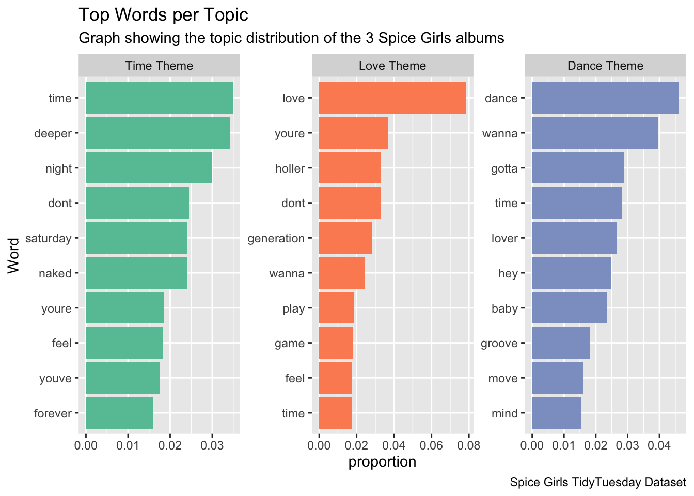

lyrics <- readr::read_csv('https://raw.githubusercontent.com/rfordatascience/tidytuesday/master/data/2021/2021-12-14/lyrics.csv')
studio_album_tracks <- readr::read_csv('https://raw.githubusercontent.com/rfordatascience/tidytuesday/master/data/2021/2021-12-14/studio_album_tracks.csv')
related_artists <- readr::read_csv('https://raw.githubusercontent.com/rfordatascience/tidytuesday/master/data/2021/2021-12-14/related_artists.csv')2 Lyrical Analysis
Hello
library(tidyverse)
#For each album, calculate mean values for danceability, energy, and valence
studio_album_tracks %>%
group_by(album_name) %>%
summarise(
danceability_mean = mean(danceability),
energy_mean = mean(energy),
valence_mean = mean(valence)) %>%
ungroup() %>%
#Set factor levels of album_name
mutate(
album_name = factor(
album_name, levels = c("Spice", "Spiceworld", "Forever"))) %>%
arrange(album_name)# A tibble: 3 × 4
album_name danceability_mean energy_mean valence_mean
<fct> <dbl> <dbl> <dbl>
1 Spice 0.694 0.731 0.756
2 Spiceworld 0.570 0.776 0.642
3 Forever 0.695 0.722 0.583What do the variables mean?:
Data link: https://github.com/rfordatascience/tidytuesday/blob/master/data/2021/2021-12-14/readme.md
#Who is the most popular member?
library(tidyverse)
member_lines <- lyrics |>
select(section_artist) |>
mutate(Sporty = str_detect(section_artist, "Sporty")) |>
mutate(Scary = str_detect(section_artist, "Scary")) |>
mutate(Posh = str_detect(section_artist, "Posh")) |>
mutate(Baby = str_detect(section_artist, "Baby")) |>
mutate(Ginger = str_detect(section_artist, "Ginger")) |>
summarize(
total_Sporty = sum(Sporty, na.rm = TRUE),
total_Scary = sum(Scary, na.rm = TRUE),
total_Posh = sum(Posh, na.rm = TRUE),
total_Baby = sum(Baby, na.rm = TRUE),
total_Ginger = sum(Ginger, na.rm = TRUE)
)
member_lines <- member_lines |>
pivot_longer(cols = everything(),
names_to = "Member",
values_to = "Number of Lines") |>
mutate(Member = str_replace(Member, "total_", ""))
ggplot(member_lines |>
mutate(Member = fct_reorder(Member, `Number of Lines`)),
aes(x = Member, y = `Number of Lines`, fill = Member)) +
geom_bar(stat = "identity") +
labs(
title = "Number of Total Lines for each Spice Girl",
x = "Spice Girls",
y = "Number of Lines"
) +
theme_minimal() +
scale_fill_brewer(palette = "Set2") 
Perhaps different albums promoted different members? Released in 1996, Scary Spice was actually featured the most in their first album, Spice. Coming in second and third were Ginger and Baby Spice. The release of the second album Spiceworld, however, placed Sporty Spice in a more prominent role musically. She rose from having the fourth most lines to being the clear favorite, as the graph below shows. Scary Spice fell to third, with Baby Spice rising to second and Ginger falling further behind. Why did Sporty Spice receive so many more during the second album? There may not be one clear answer. Audience preferences, musical ability, and more are all factors that could explain the change. One thing is certain, however: Sporty Spice, on paper, became the most popular member of the Spice Girls.
#What About Individual Albums?
member_album_lines_per_album <- lyrics |>
select(album_name, section_artist) |>
mutate(
Sporty = str_detect(section_artist, "Sporty"),
Scary = str_detect(section_artist, "Scary"),
Posh = str_detect(section_artist, "Posh"),
Baby = str_detect(section_artist, "Baby"),
Ginger = str_detect(section_artist, "Ginger")
) |>
group_by(album_name) |>
summarize(
total_sporty = sum(Sporty, na.rm = TRUE),
total_scary = sum(Scary, na.rm = TRUE),
total_posh = sum(Posh, na.rm = TRUE),
total_baby = sum(Baby, na.rm = TRUE),
total_ginger = sum(Ginger, na.rm = TRUE),
.groups = "drop"
) |>
pivot_longer(
cols = starts_with("total_"),
names_to = "Member",
values_to = "Number of Lines"
) |>
mutate(Member = str_replace(Member, "total_", "")) # Clean up the member names
# Visualize the number of lines per member by album
ggplot(member_album_lines_per_album |>
mutate(Member = fct_reorder(Member, `Number of Lines`)),
aes(x = album_name, y = `Number of Lines`, fill = Member)) +
geom_bar(stat = "identity", position = "dodge") +
labs(
title = "Number of Lines for Each Spice Girl by Album",
x = "Album",
y = "Number of Lines"
) +
theme_minimal() +
scale_fill_brewer(palette = "Set2")
But what about the third album? Geri Halliwell-Horton left the group in 1998 to the shock of fans citing creative differences, exhaustion, as well as rumored arguments with Mel B. In response, The four remaining members remained and adapted their musical style and image for their next album Forever.
Despite a new R/B sound, Sporty Spice remained as the member with the most lines. Interestingly, the album has the least amount of lines out of their entire discography.
#What are the main lyrical themes? Let's start with top words
library(tokenizers)
library(tidytext)
lyrics_data <- lyrics |>
mutate(clean_lyrics = str_to_lower(line), # Convert to lowercase
clean_lyrics = str_replace_all(clean_lyrics, "[^a-z\\s]", ""), # Remove punctuation
clean_lyrics = str_squish(clean_lyrics)) # Remove extra spaces
tokens <- lyrics_data |>
unnest_tokens(word, clean_lyrics) # 'word' column will contain individual words
bigrams <- lyrics_data |>
unnest_tokens(bigram, clean_lyrics, token = "ngrams", n = 2)
data("stop_words")
tokens <- tokens |>
anti_join(stop_words, by = "word")
word_counts <- tokens |>
count(word, sort = TRUE)
# View top words
head(word_counts)# A tibble: 6 × 2
word n
<chr> <int>
1 love 137
2 time 105
3 wanna 102
4 youre 93
5 dont 92
6 la 85word_counts |>
slice_max(n, n = 20) |>
ggplot(aes(x = reorder(word, n), y = n)) +
geom_col(fill = "steelblue") +
coord_flip() +
labs(title = "Top Words in Song Lyrics", x = "Word", y = "Count")
#Sentiment analysis
# Example using Bing lexicon
sentiment_scores <- tokens |>
inner_join(get_sentiments("bing"), by = "word") |>
count(sentiment, sort = TRUE)
# Visualize sentiment
sentiment_scores |>
ggplot(aes(x = sentiment, y = n, fill = sentiment)) +
geom_col() +
labs(title = "Sentiment Analysis of Lyrics", x = "Sentiment", y = "Count") +
scale_fill_manual(values = c("positive" = "green", "negative" = "red"))
library(tidyverse)
library(tidytext)
library(tokenizers)
tf_idf <- tokens |>
count(song_name, word, sort = TRUE) |> # Replace 'song_id' with a song identifier column
bind_tf_idf(word, song_name, n)
# View top TF-IDF words
tf_idf |>
arrange(desc(tf_idf)) |>
head(10)# A tibble: 10 × 6
song_name word n tf idf tf_idf
<chr> <chr> <int> <dbl> <dbl> <dbl>
1 "Saturday Night Divas" deeper 41 0.247 3.43 0.848
2 "If U Can\x92t Dance" dance 60 0.278 2.74 0.761
3 "Holler" holler 48 0.194 3.43 0.665
4 "Naked" naked 29 0.190 3.43 0.651
5 "Move Over" generation 41 0.237 2.74 0.650
6 "Saturday Night Divas" saturday 29 0.175 3.43 0.600
7 "Spice Up Your Life" la 64 0.249 2.34 0.582
8 "Mama" loving 22 0.168 2.74 0.460
9 "Weekend Love" weekend 16 0.126 3.43 0.433
10 "Something Kinda Funny" kinda 18 0.126 3.43 0.432bigram_counts <- bigrams |>
count(bigram, sort = TRUE)
library(topicmodels)
# Create a document-term matrix
dtm <- tokens |>
count(song_name, word) |>
cast_dtm(song_name, word, n)
# Fit LDA model
lda_model <- LDA(dtm, k = 3, control = list(seed = 123)) # 'k' is the number of topics
topics <- tidy(lda_model, matrix = "beta")
# View top words per topic
topics |>
group_by(topic) |>
slice_max(beta, n = 10) |>
ungroup() |>
ggplot(aes(x = reorder_within(term, beta, topic), y = beta, fill = factor(topic))) +
geom_col(show.legend = FALSE) +
facet_wrap(~ topic, scales = "free") +
coord_flip() +
scale_x_reordered() +
labs(title = "Top Words per Topic", x = "Word", y = "Beta")
topics <- tidy(lda_model, matrix = "beta") # "beta" represents the word-topic distributions
top_words <- topics %>%
group_by(topic) %>%
slice_max(beta, n = 10) %>% # Get top 10 words for each topic
ungroup()
# Visualize the top words for each topic
top_words %>%
ggplot(aes(x = reorder_within(term, beta, topic), y = beta, fill = factor(topic))) +
geom_col(show.legend = FALSE) +
facet_wrap(~ topic, scales = "free") +
coord_flip() +
scale_x_reordered() +
labs(title = "Top Words per Topic", x = "Word", y = "Beta")
library(wordcloud)
topics %>%
group_by(topic) %>%
slice_max(beta, n = 10) %>%
with(wordcloud(term, beta, max.words = 10, colors = brewer.pal(8, "Dark2")))
Song_topics <- tidy(lda_model, matrix = "gamma") # 'gamma' represents the document-topic distributions
Song_topics_wide <- Song_topics %>%
pivot_wider(
names_from = topic, # The topic column will become the new column names
values_from = gamma, # The gamma values will fill the columns
)
# View document-topic distribution
head(Song_topics_wide)# A tibble: 6 × 4
document `1` `2` `3`
<chr> <dbl> <dbl> <dbl>
1 2 Become 1 0.186 0.0875 0.727
2 Denying 1.00 0.000163 0.000163
3 Do It 0.000165 0.000165 1.00
4 Get Down With Me 0.999 0.000318 0.000318
5 Goodbye 0.000264 0.000264 0.999
6 Holler 0.0000949 1.00 0.0000949#topic distribution by album
topics_wide <- read_csv("~/Desktop/Macalester School Materials/Macalester Fall 2024/project-team-spice/data/topics_wide.csv")
album_topics <- topics_wide |>
group_by(Album) |>
summarize(mean_1 = mean(`1`), mean_2 = mean(`2`), mean_3 = mean(`3`),
.groups = "drop") |>
pivot_longer(cols = starts_with("mean"), names_to = "topics",
values_to = "mean of topics")
ggplot(album_topics |>
mutate(Album = fct_reorder(Album, `mean of topics`)),
aes(x = Album, y = `mean of topics`, fill = topics)) +
geom_bar(stat = "identity", position = "dodge") +
labs(
title = "Topic Distribution Across Spice Girls Albums",
x = "Album",
y = "Mean Topic Proportion",
fill = "Topic"
) +
theme_minimal()
#What is TF-IDF?
TF-IDF stands for term frequency-inverse document frequency. This model can be applied to a few different purposes, but I use it specifically for text summarization and keyword extraction to find and quantify the importance of specific words in Spice Girls songs.
Term frequency: There are multiple ways to define frequency, but here, it means the frequency of a particular word in the songs; how often a word is said in a song.
Inverse document frequency: I use this to find how common or uncommon a word is in the lyrics. This is particularly important to filter out filler words like “of” and “as.”
Using both TF and IDF, I tried to find which words hold the most relevance in their songs. The higher the TF-IDF score, the more relevance the word holds in the song, while the less relevant it is, the closer the score is to zero.
This model isn’t perfect, though. There may be some words, like “love,” that are extremely common in their songs. However, their tf-idf score may be low because it is not especially unique, though it is still extremely important.
https://www.capitalone.com/tech/machine-learning/understanding-tf-idf/
#What is LDA Analysis?
LDA analysis is a “probabilistic generative model” used here to analyze a collection of text–Spice Girls lyrics. You could also use this for articles, books, and other text. LDA approaches documents as a collection of themes or “Topics,” which it them hopes to uncover by analyzing the words of the document.
https://medium.com/@pinakdatta/understanding-lda-unveiling-hidden-topics-in-text-data-9bbbd25ae162
https://en.wikipedia.org/wiki/Latent_Dirichlet_allocation#:~:text=In%20natural%20language%20processing%2C%20latent,of%20a%20Bayesian%20topic%20model.